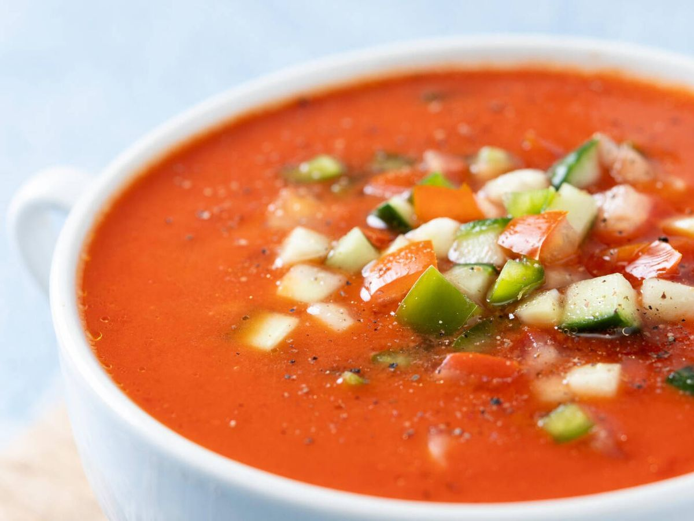
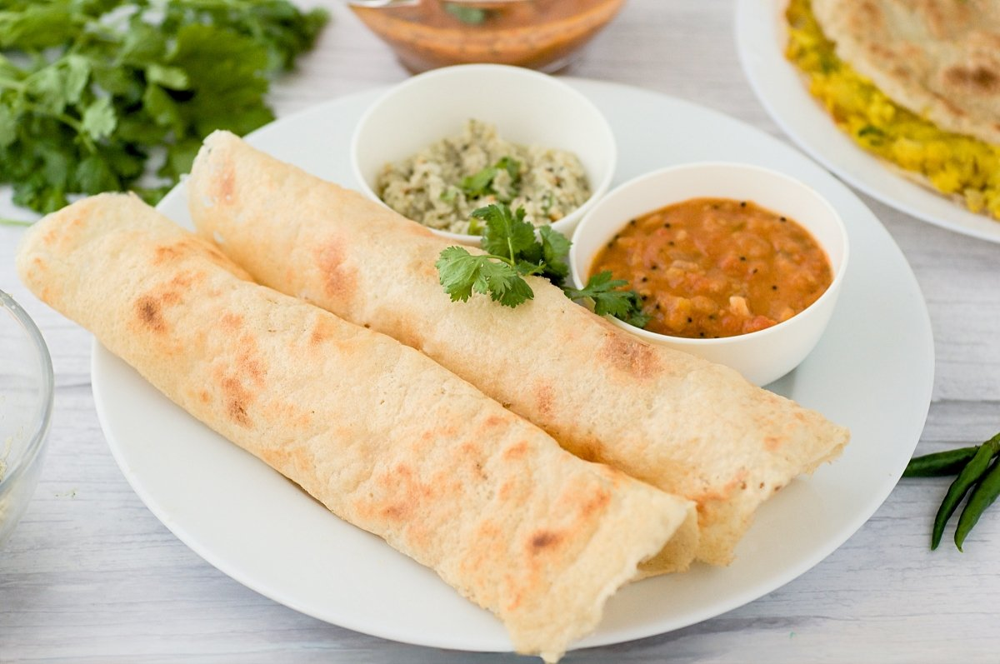
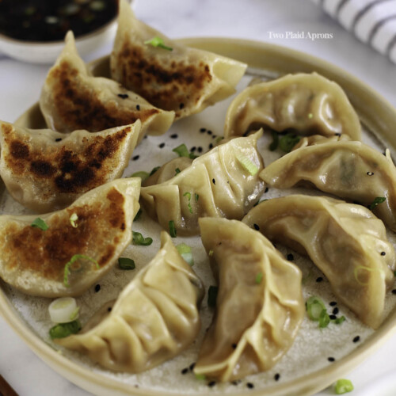

Welcome all to this website
Chinese Cuisine
Chinese cuisine is an important part of Chinese culture, which includes cuisine originating from the diverse
regions of China, as well as from Chinese people in other parts of the world. Because of the Chinese
diaspora and historical power of the counntry, Chinese cuisine has influenced many other cuisines in Asia,
with modifications made to cater to local palates. Chinese food staples such as rice, soy sauce,noodles, tea
and tofu, and utensils such as chopsticks and the wok, can now be found worldwide.
Food
Food is any substance consumed to provide nutritional support for an organism. Food is usually of a plant,
animal, or fungal origin, and contains essential nutrients, such as carbohydrates, fats, proteins, vitamins
or minerals.
Pizza
 Pizza (Italian: [pittsa], Neapolitan:[pittsa]) is a savory dish of Italian origin consisting of a usually round,
flattened base of leavened wheat-based dough topped with tomatoes, chees, and often various other ingredients
(such as anchovies, mushrooms, onions, olives, pineapple, meat...) wich is then baked at high temperature,
traditionally in a wood-fire oven.[1] A small pizza is sometimes called a pizzetta. A person who makes pizza is
known as a pizzaiolo.
Pizza (Italian: [pittsa], Neapolitan:[pittsa]) is a savory dish of Italian origin consisting of a usually round,
flattened base of leavened wheat-based dough topped with tomatoes, chees, and often various other ingredients
(such as anchovies, mushrooms, onions, olives, pineapple, meat...) wich is then baked at high temperature,
traditionally in a wood-fire oven.[1] A small pizza is sometimes called a pizzetta. A person who makes pizza is
known as a pizzaiolo.
Gazpacho

Gazpacho is a celebrated, naturally dairy-free cold soup that serves as the culinary crown jewel of Andalusia, a
sun-drenched region in southern Spain. Renowned for its vibrant red hue and deeply refreshing qualities, this
iconic
dish is traditionally crafted by blending raw, peak-summer vegetables like ripe tomatoes, crisp cucumbers, and
bell
peppers with savory garlic, olive oil, sherry vinegar, and stale bread. The result is a beautifully emulsified,
velvety
liquid salad that perfectly captures the essence of Mediterranean cuisine. Far more than just a soup, gazpacho
is a
vital cultural staple designed to combat scorching Iberian summers, celebrated worldwide both as an elegant
starter and
a casual, hydrating beverage served straight from a pitcher.
Dosa

Dosa is a quintessential South Indian culinary masterpiece that has evolved into a globally celebrated delicacy.
This
savory crepe is meticulously crafted from a traditional, overnight-fermented batter consisting of ground rice
and black
gram lentils. The complex fermentation process breaks down starch, unlocking a unique, mildly tangy flavor
profile while
creating a gut-healthy meal rich in carbohydrates and proteins.
Dumplings

Chinese dumplings, or jiaozi, are traditional parcels of dough wrapped around a savory filling, dating back over
1,800
years. Typically stuffed with minced meat (like pork) and vegetables (such as cabbage), they are boiled,
steamed, or
pan-fried and served with a soy sauce and vinegar dip. They hold deep cultural significance, symbolizing wealth
and
family unity.
All @copy rights deserved by Swati Singh